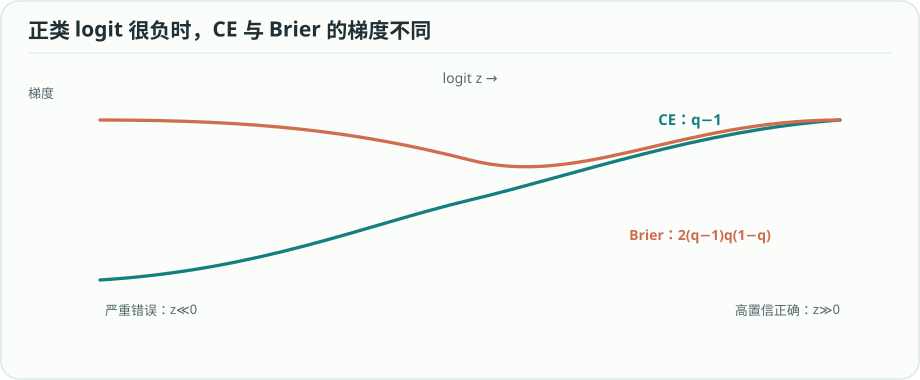
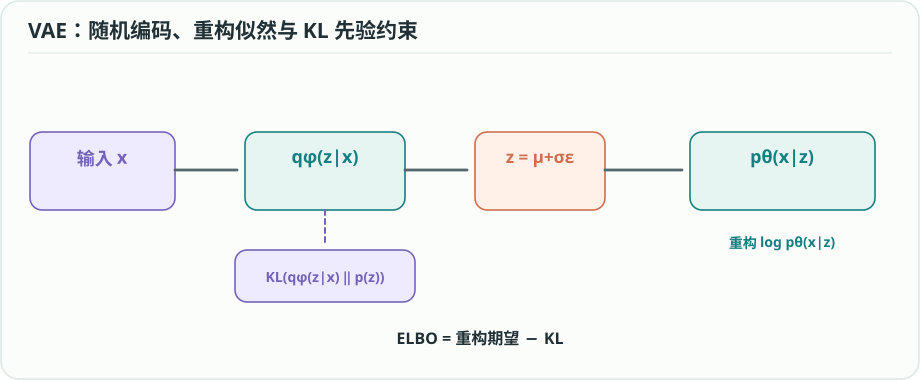

为什么分类常用交叉熵？
分类器输出的不是一个“正确类别编号”，而是给每个类别分配概率。训练时，我们需要奖励把概率质量放在真实类别上的模型，同时强烈惩罚把真实事件赋予极小概率的模型。负对数似然（NLL）正好表达了这个目标：模型给真实标签的概率越大，损失越小。
交叉熵不是因为“深度学习习惯如此”才出现。它来自明确的概率模型：若标签服从类别分布，模型输出条件概率 qθ(y|x)，最大化训练样本似然等价于最小化平均负对数似然。下文训练损失中的 log 与 exp 均采用自然对数/指数，因此 NLL 与交叉熵以 nats/样本计；换算成 bits 需除以 ln 2。

从最大似然到交叉熵
给定独立训练样本 (xᵢ,yᵢ)，分类模型定义条件分布 qθ(y|x)。最大化似然与最小化负对数似然等价；当真实目标分布记为 p、模型分布记为 q 时，交叉熵满足：
对固定真实分布 p，H(p) 与模型参数无关，因此最小化交叉熵等价于最小化 D_KL(p‖q)。若标签是 one-hot，交叉熵简化为真实类别的负对数概率；若目标是软标签，公式仍成立，只是目标分布不再集中于单一类别。
实现时通常直接把 logits 传给数值稳定的 log_softmax / fused cross-entropy 算子，不要先计算很小的 softmax 概率再手动取 log。对序列任务还要明确 padding mask、ignore_index、类别权重与 reduction 方式。
Softmax 与交叉熵的梯度抵消
对 logits zⱼ，Softmax 给出 qⱼ=exp(zⱼ)/Σₖexp(zₖ)。目标分布 y 满足非负且总和为 1，单样本交叉熵为 L=−Σⱼ yⱼ log qⱼ。将 Softmax 的 Jacobian 与交叉熵链式求导后，得到：
梯度是“预测概率减去目标概率”。它的分量之和为零，符合 logits 同时加常数不改变 Softmax 的平移不变性。one-hot 目标下，真实类别的梯度为 q_c−1，错误类别为 q_j。

滑块展示三分类 Softmax + 交叉熵；目标类别索引为 1。输出包括真实类别概率、单样本损失与对应梯度。
交叉熵与平方误差：不是简单的优劣关系
把分类的平方误差称为 Brier score 是有统计依据的：对类别概率向量 q 与 one-hot 观测 y，Σⱼ(qⱼ−yⱼ)² 是一个严格适当评分规则。它在真实概率处的期望损失最小；二分类时就是概率预测的均方误差。因此，“MSE 没有合理概率模型”是不正确的。
交叉熵（log score）与 Brier score 的惩罚形状不同。Log loss 对真实事件概率趋近 0 的过度自信预测惩罚极重；Brier score 的误差在概率空间中有界。若把 sigmoid 输出与二元标签组合，Brier 对 logit 的梯度包含 q(1−q)，在饱和区可能变小；二元交叉熵的 logit 梯度为 q−y。选择哪一种取决于概率校准、优化、鲁棒性和任务目标，不存在“交叉熵在所有情况下都优于平方误差”的定理。
Label Smoothing：软化目标分布
标签平滑把 one-hot 目标与均匀分布混合。对 K 类、平滑系数 ε，常见定义是 ỹ=(1−ε)y+ε·u，其中每类 uⱼ=1/K。它让模型不必把训练样本的全部概率质量压到单一类别，同时仍使用交叉熵优化。
标签平滑可能改善泛化或置信度，但效果依赖数据噪声、类别结构、训练目标与校准指标；它也可能抑制教师模型的暗知识或改变知识蒸馏的目标。PyTorch 的 CrossEntropyLoss(label_smoothing=ε) 使用 logits 输入，并将目标与均匀分布混合。
知识蒸馏：温度改变教师分布
知识蒸馏用教师模型的软概率指导学生模型。温度 T 大于 1 时，Softmax 分布变平，类别之间的相对相似性更容易显露。常见蒸馏损失是教师与学生温度分布之间的交叉熵或 KL，并常乘上 T² 补偿温度缩放对梯度幅度的影响；训练中也可同时保留真实标签的硬目标。
蒸馏不是“把教师的标签复制给学生”，而是把教师分布中的类间关系当作额外监督。温度、硬标签权重、教师置信度和数据分布都会影响训练。
VAE：重构似然与先验 KL
变分自编码器（VAE）中的 KL 项与分类交叉熵不是同一个东西。VAE 最大化证据下界（ELBO）：一项让潜变量 z 能解释观测 x，另一项让近似后验 qφ(z|x) 不偏离先验 p(z) 太远：
重构项是由解码器似然决定的：Bernoulli 观测对应二元交叉熵；固定方差 Gaussian 似然对应带尺度因子的平方误差。β-VAE 会改变 KL 惩罚权重，形成重构质量与潜变量约束之间的权衡。不能仅凭损失里出现 KL 就把 VAE、标签平滑和信息瓶颈视作同一个算法。

损失函数的概率检查
- 先说明模型输出代表什么概率分布，再写似然与损失。
- one-hot 与 soft target 都可用交叉熵；目标分布必须归一化。
- CE 和 Brier 都是适当评分规则，惩罚形状与优化梯度不同。
- Label smoothing、蒸馏温度和 VAE KL 是不同机制，不能混淆。
- 报告模型表现时同时检查 NLL、Brier、校准误差和任务指标，而不只看准确率。
来源与延伸阅读
- PyTorch CrossEntropyLoss documentation：logits 输入、概率目标、类别权重与 label smoothing 语义。
- Szegedy et al. (2016), Rethinking the Inception Architecture for Computer Vision：label smoothing 的经典应用。
- Hinton, Vinyals & Dean (2015), Distilling the Knowledge in a Neural Network：软目标蒸馏与温度。
- Kingma & Welling (2013), Auto-Encoding Variational Bayes：重参数化与 ELBO。
- Proper scoring rules: log loss and squared error：概率评分规则的适当性。